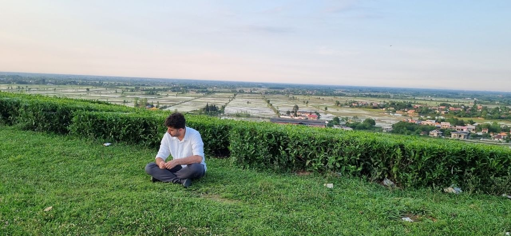
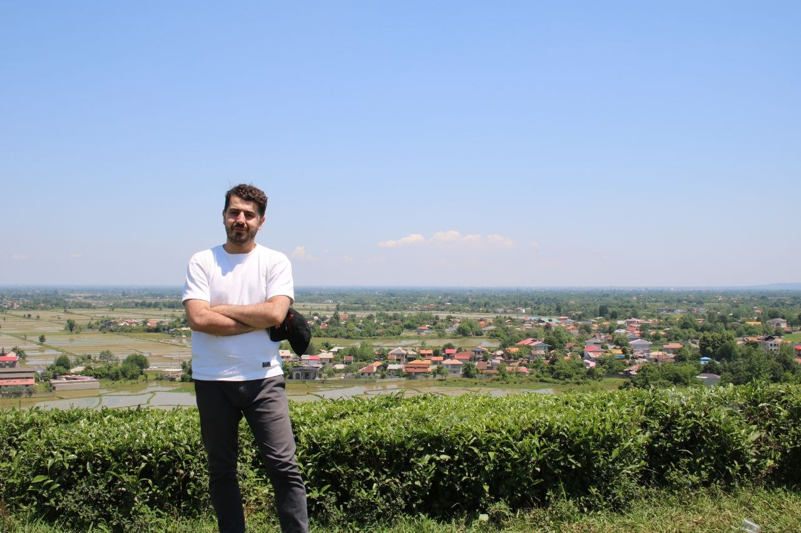
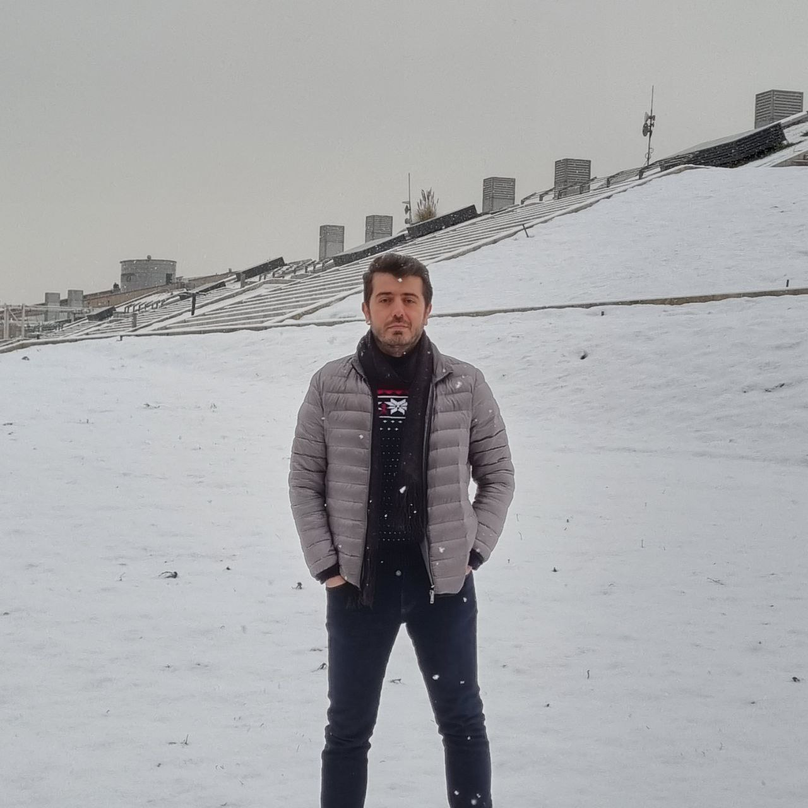

Product strategy
Open to product leadership, consulting & mentoring
I turn complex product problems into measurable wins.
Product Manager with 5+ years of experience leading B2B and B2C products—from zero-to-one platforms to high-traffic e-commerce journeys.
- B2B + B2C
- Product experience
- 0 → 1
- Building from scratch
- SCALE
- Growth and operations
GOOSHISHOP
KASRA PARS
TECHNOLIFE
MCI
ALIBABA TRAVEL
Tactical setup
My product formation.
A clear system for moving from an uncertain problem to measurable product impact.
Coach’s notes
- •
Read the fieldUnderstand users, context and constraints.
- •
Set the shapeAlign strategy, priorities and the team.
- •
Play for impactShip, learn and improve.
Match overview
Product work that created momentum.
A broad view of how I help products, teams and operations move forward.
MASOUD PRODUCT XI
PLAYING STYLE
PRODUCT SCOREBOARD
Product delivery
Help the team move as one.
Creating alignment across product, design, engineering and stakeholders.Growth & experience
Make every touchpoint count.
Improving user journeys through research, product insight and iteration.Operations & systems
Build for clarity and scale.
Simplifying workflows and creating systems teams can rely on.
Clarity to build.
Career lineup
Built across the full product field.
From business analysis and travel operations to AI search, e-commerce and product leadership.
Product leadership
Product management
Foundations

NOW
Product Manager
Optimizing warehouse operations, internal visibility and checkout performance.
- Operational workflow improvement
- Smoother checkout experience
24
Product Team Lead
Built a full-scale B2B electronics commerce platform from zero to one.
- Catalog, pricing and order systems
- Warehouse workflow improvement
23
Product Team Lead
Led roadmap execution, stakeholder alignment, performance improvements and team growth.
- More focused product delivery
- Product team development
20
Product Manager
Owned AI-powered audio search and a multi-source media discovery product.
- More relevant search results
- Stronger content discovery
19
Product Owner
Improved call-center and refund operations through automation and service integration.
15
Business Analysis Foundations
Modelled enterprise workflows with UML and BPMN, supported automated testing with BDD and Gherkin, and worked in travel software.
How I can help
Choose the kind of partnership you need.
Hire me
Product leadership for teams that need stronger strategy, prioritization and cross-functional delivery.
- Product strategy & roadmaps
- Metrics & experimentation
- Team alignment
Product consulting
Focused support for a product challenge, from diagnosing bottlenecks to creating an actionable plan.
- Journey & funnel reviews
- Operational optimization
- Product discovery
PM mentoring
Practical guidance for aspiring and early-career product managers navigating the field.
- Career positioning
- Case-study feedback
- Interview preparation

BEYOND THE TOUCHLINE
“Good product decisions need both intensity and distance.”
Football, reading and quiet time help me return to the work with a clearer view.
Beyond the role
A systems thinker with a human lens.
I started in business analysis, where I learned to make complex systems understandable. Product management taught me the other half: the best system only matters when it solves a real human problem.
Football shapes how I think about teams and strategy. Reading expands the questions I ask. Meditation helps me stay clear when decisions get noisy.
M.Sc.
Industrial Engineering
Amirkabir University of Technology
B.Sc.
Mechanical Engineering
University of Zanjan
Next fixture
Have a product challenge worth solving?
Whether you’re hiring, need an experienced product perspective, or want help entering product management—let’s start with a conversation.
AVAILABLE FOR
Product leadershipConsultingPM mentoring
Contact links are ready to connect once email and LinkedIn details are added.